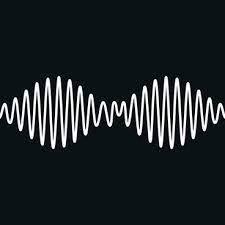

-
AM
AM é o quinto álbum de estúdio da banda britânica de rock Arctic Monkeys, lançado em 9 de setembro de 2013
.
.
-
Hambug
Humbug é o terceiro álbum de estúdio da banda britânica de indie rock Arctic Monkeys. O álbum foi lançado primeiro no Japão, em 19 de agosto de 2009
-
The Car
The Car é o sétimo álbum de estúdio da banda inglesa de rock alternativo Arctic Monkeys, anunciado em 24 de agosto de 2022 e lançado em 21 de outubro de 2022